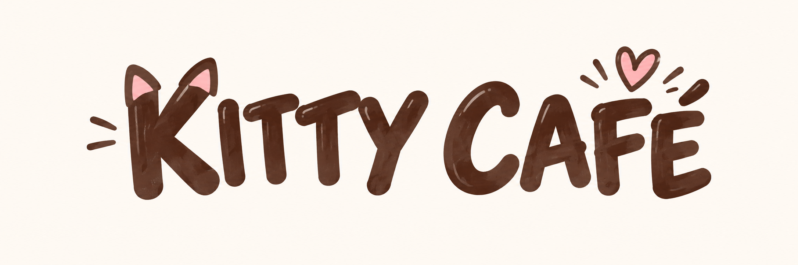

Concept
Des boissons chaudes, des boissons froides et des pâtisseries dans une ambiance douce et conviviale. Les chats proviennent d'une association et peuvent être adoptés.

Des boissons chaudes, des boissons froides et des pâtisseries dans une ambiance douce et conviviale. Les chats proviennent d'une association et peuvent être adoptés.
Ouvert de 9h00 à 17h00.
Fermé le lundi et le mardi.
Neuilly-sur-Seine, France.